先日のコラムを読んでいただいたとあるお題クリエイターの方から感想をいただきました。そのため、本人に無断でその内容をまとめました。
私の解釈も介入してくるため、少し間違って伝わる可能性もありますが、お題クリエイターの語る美学として今回記載したいなと思っています。
イ
ン
サイダー
ゲーム
コラム
Pa
rt 2
お題
の 美学
2020/3/10



Topics
背景
白いフラン
■目的
お題クリエイターのお題クリエイト術の一旦を垣間見る。

お題クリエイター
いくつかの軸でインサイダーがお題を導くために動かなければならないようにコントロールするお題を出します。
クリエイターの語る４つの軸
- ルートを誤認させる
- お題を出すために別のものが必要なもの
- お題に正確に解答すると誤認される
- 誰でも知っている言葉なのに、発想できないもの
ルートを誤認させる
お題クリエイター
「命乞い」「松葉杖」
後は自分で考えろと言わんばかりに、お題クリエイターは例しか挙げなかった。
考察
白いフラン
「命乞い」に必要な情報は以下だと思います。
- お題は「行動」である。
- 「殺されそうな人」の行動
お題を出すために別のものが必要なもの
お題クリエイター
「ふりだし」「待ちぼうけ」など。
お題を出すために別のものが必要でお題に対して答えていると見つけられないパターン
お題を出すために別のものが必要でお題に対して答えていると見つけられないパターン
考察
白いフラン
「ふりだし」に必要な情報は「すごろく」に尽きると思いました。
お題自体が何なのか（「状況」なのか「場所」なのか）などはGMごとに異なりそうです。 お題が何なのかだけに躍起になって質問していると混乱しそうですね。
お題自体が何なのか（「状況」なのか「場所」なのか）などはGMごとに異なりそうです。 お題が何なのかだけに躍起になって質問していると混乱しそうですね。
お題に正確に解答すると誤認される
お題クリエイター
「ドナドナ」「レトロ」など。
GMがお題を調査して正確な知識を得ることにより、GMと村人に意識の違いを生ませるパターン。
GMがお題を調査して正確な知識を得ることにより、GMと村人に意識の違いを生ませるパターン。
考察
白いフラン
「ドナドナ」などは、「仔牛」と「童謡」のワードがわかれば出そうです。
しかしGMが「イディッシュの歌」だから「日本の歌ですか？」を否定したり、「歌う人の特定は重要ですか？」で肯定してユダヤ人を出そうとしたりすると複雑化しそうです。 お題に対して正確に答えるほど難しくなるなんとも矛盾が孕んだお題です。
しかしGMが「イディッシュの歌」だから「日本の歌ですか？」を否定したり、「歌う人の特定は重要ですか？」で肯定してユダヤ人を出そうとしたりすると複雑化しそうです。 お題に対して正確に答えるほど難しくなるなんとも矛盾が孕んだお題です。
誰でも知っている言葉なのに、発想できないもの
お題クリエイター
「アドバルーン」「起き上がり小法師」など。
誰でも知っている言葉なのに、生活から離れすぎていて村人が発想できないパターン。
誰でも知っている言葉なのに、生活から離れすぎていて村人が発想できないパターン。
考察
白いフラン
「アドバルーン」は「気球」や「風船」が出たとしてもたどり着けるか難しい言葉かもしれません。どのように村に働きかけるかインサイダーの実力が試されそうです。
まとめ
白いフラン
大変興味深い話をいただいたので、お題を作る時の参考にしたいと思ってます！